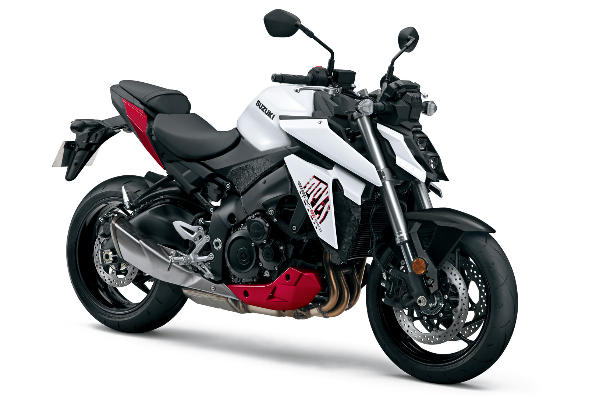

MOTOS NAKED
SUZUKI GSX-S 950
Cuando observas la Suzuki GSX-S950, sus imponentes líneas, atrevidos gráficos, y poderosa arquitectura, te preguntas del porqué de una moto de semejante calado para satisfacer las exigencias del “sencillo” carnet A2, cuya potencia está limitada a 35kW, o lo que es lo mismo, 47,5 CV. Y creo que la cuestión va más allá de aquello del típico, y siempre recurrido, refranero español que dice “caballo grande, ande o no ande”.
Y es que a los mandos de la Suzuki GSX-S950, derivada directamente de la GSX-S1000 de 152 CV (no lo olvidemos), te sientes rodando sobre una “moto grande”, con su peso (214 kg declarados), y sus inercias… Pero también con su imagen imponente, su pisada imperturbable, el dinamismo sólo ofrecido por una parte ciclo de auténtica calidad, y por supuesto, sus hechuras, que posibilitan a pilotos grandes y pequeños, disfrutar de una excelente ergonomía.
